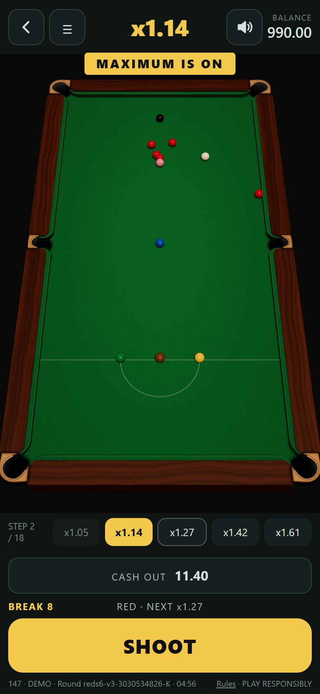
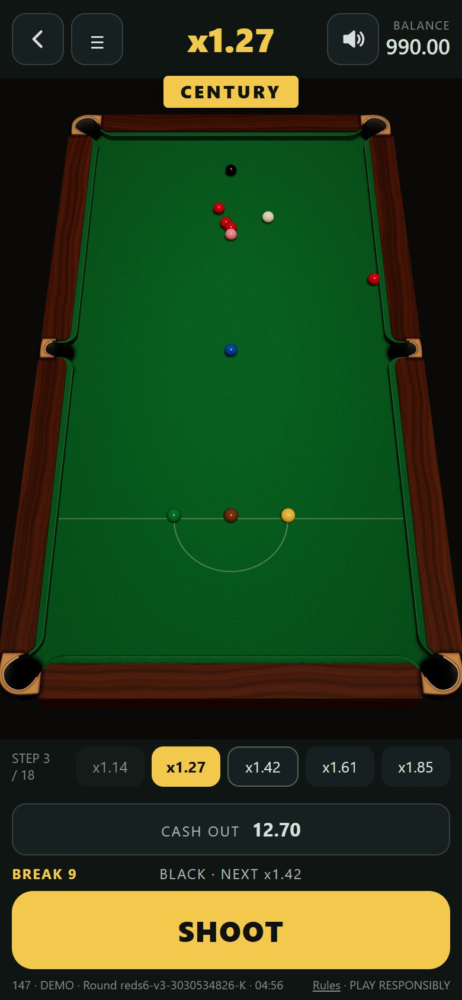
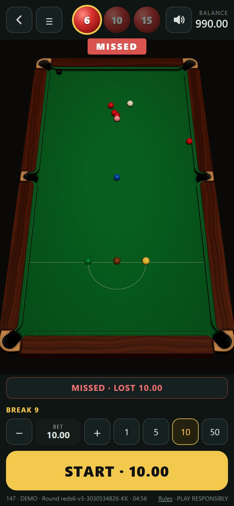
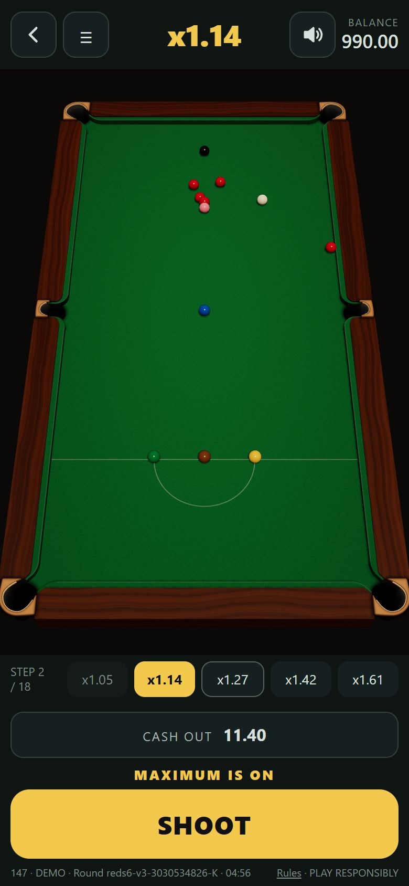
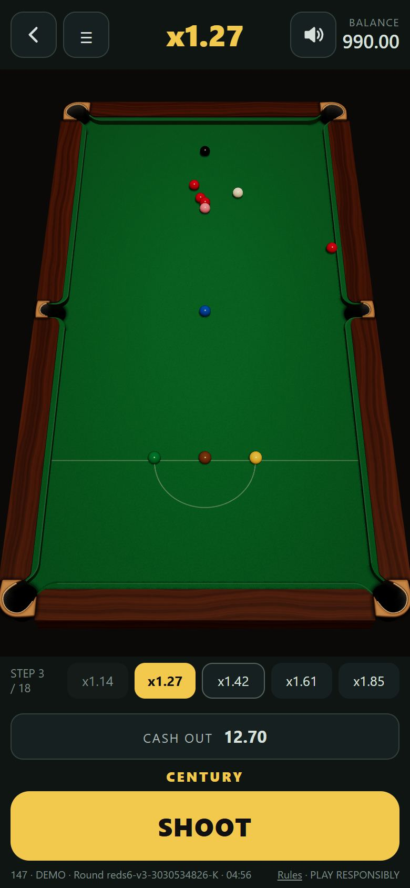
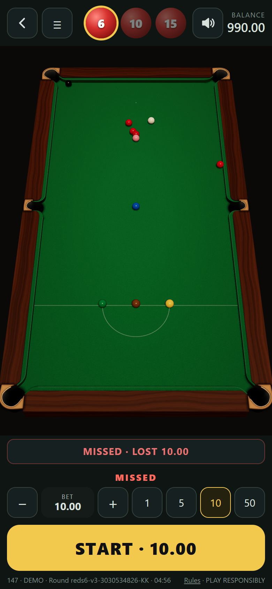
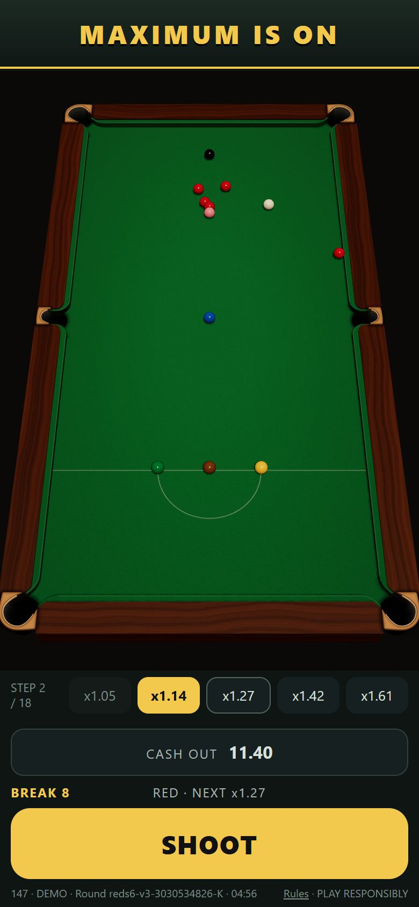
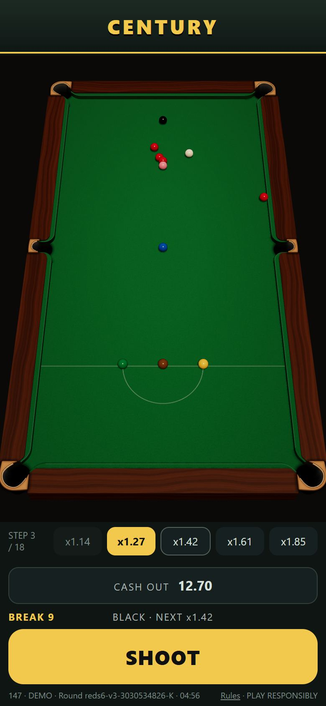
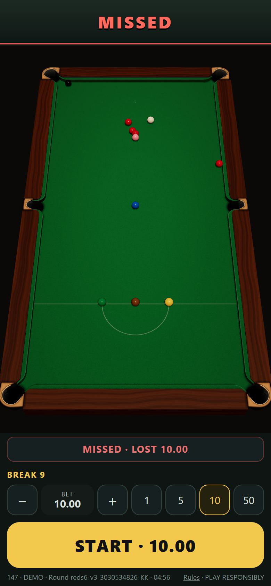

On-screen captions: 3 styles
Options page only: nothing in the game was changed. Each picture is the real game screen (390x844, dev server); the
caption was drawn on top by scripts/captions-shots.mjs to show where it would go. The table behind is a
normal 6-red round, so the balls do not match the caption (a CENTURY is not possible with 6 reds). No caption is on the cloth.
Before a shot: MAXIMUM IS ON · after a pot: CENTURY · after a miss: MISSED.
Style A: banner above the table
A short gold label (red for a failure) in the strip between the top bar and the table. The top bar and the table stay visible.



Style B: in the hint line
The caption takes the place of the hint line ("RED · NEXT x1.61") for its time, in bold gold (red for a failure). This is the quietest option: nothing new appears on the screen.



Style C: over the top bar
A large caption covers the whole top bar (balance and multiplier) for its time. The loudest option; the balance is hidden for that moment.



When each message appears (proposal)
BEFORE messages are shown while the game waits for SHOOT. They use only the table and
the score so far (balls on the table, reds left, points, which colours were potted). They never use the outcome the RNG
has already decided for the next shot, so they cannot give the result away. AFTER messages
are shown when the shot has finished on screen (the ball has dropped, or the balls have stopped).
Times use config messages.durationSeconds (1.0 s) and clearanceMessageMaxSeconds (3 s).
Priority 1 is the highest. Only one caption shows at a time; when two happen together, the higher one is shown and the
other is dropped (not queued).
| Message | When it appears (rule) | How long | Priority | Before / after |
|---|---|---|---|---|
| MAXIMUM | The table is cleared and every red was followed by the black (75 / 107 / 147, RULES C.9). | up to 3 s, tap to skip | 1 | AFTER |
| TOTAL CLEARANCE | The table is cleared, but not a maximum. | up to 3 s, tap to skip | 2 | AFTER |
| RE-RACK | No shot could be found for a decided success (RULES D.4). The round ends and is paid. | 1.5 s, then the strip line stays | 2 (ends the round; nothing else can happen at the same time) | AFTER (in place of the shot) |
| MISSED | A failed shot with label plain miss or jaw rattle. | 1.5 s, then the strip line "MISSED · LOST" stays | 2 (ends the round) | AFTER |
| IN-OFF | A failed shot where the cue ball is potted. | 1.5 s, then the strip line stays | 2 (ends the round) | AFTER |
| FOUL | A failed shot that hits the wrong ball first or no ball (the D.2 fallback). | 1.5 s, then the strip line stays | 2 (ends the round) | AFTER |
| SNOOKERED | Step 1 fails because the break left us snookered. | 1.5 s, then the strip line stays | 2 (ends the round) | AFTER |
| OPPONENT NEEDS SNOOKERS | The pot that first makes our score greater than the points remaining (RULES C.8). Once a round. | 1.0 s | 3 | AFTER |
| CENTURY | The pot that first takes the break to 100 or more (10 and 15 reds only). Once a round. | 1.0 s | 4 | AFTER |
| FIFTY BREAK | The pot that first takes the break to 50 or more. Once a round. | 1.0 s | 5 | AFTER |
| FRAME BALL | The next ball, if potted, would make our score greater than the points remaining (from score and table only). Once a round. | until SHOOT | 6 | BEFORE |
| MAXIMUM IS ON | Every red so far was followed by the black, and at least 3 / 4 / 5 reds are potted (config maximumIsOnFromRed). Once a round. | until SHOOT | 7 | BEFORE |
| LAST RED | Exactly one red is left on the table and a red is next. | until SHOOT | 8 | BEFORE |
| FLUKE | A pot the game marks as a fluke (config flukeRate; a variety choice only, never the odds). | 1.0 s | 10 | AFTER |
Notes. (1) The config priority list also has ON THE COLOURS (priority 9), which is not one of the 14 messages here. (2) The failure messages and RE-RACK always end the round, so they never compete with a pot message; the "2" only says they are never dropped. (3) A BEFORE message and an AFTER message never meet: the AFTER one ends before the game waits for SHOOT again. (4) RULES B.4 today shows the clearance message on the empty cloth; with these captions MAXIMUM / TOTAL CLEARANCE would move above the table too. That is the owner's choice. (5) After a failure the ladder strip already says "MISSED · LOST 10.00", so a failure caption repeats it (see the MISSED pictures); a failure caption could be left out, or shown only during the 1.5 s before the strip line appears. (6) The developer-only marks (DEV tag, flag, solver version) are hidden in these pictures.